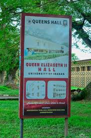
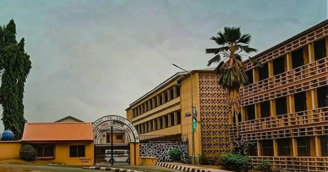
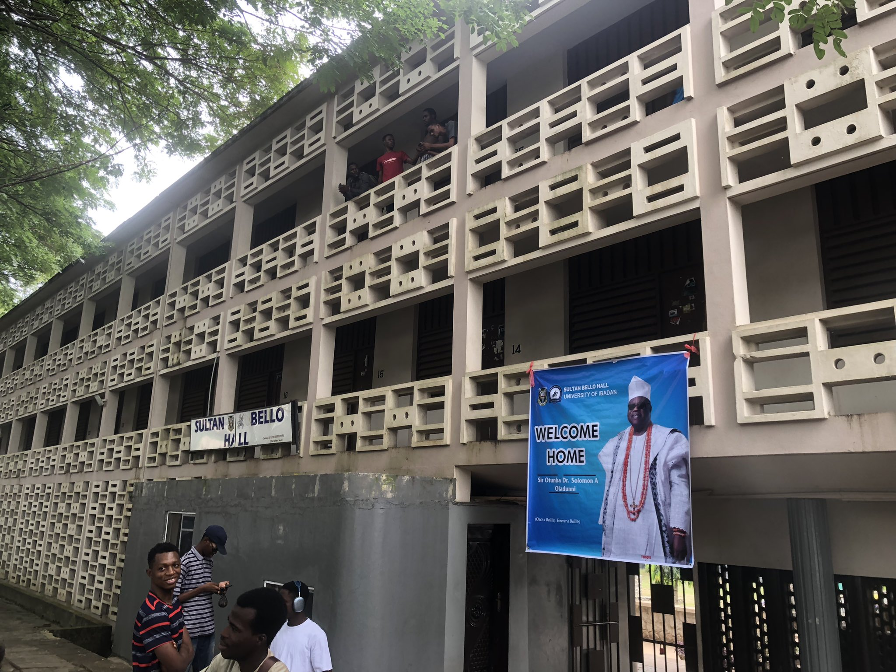
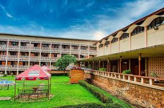
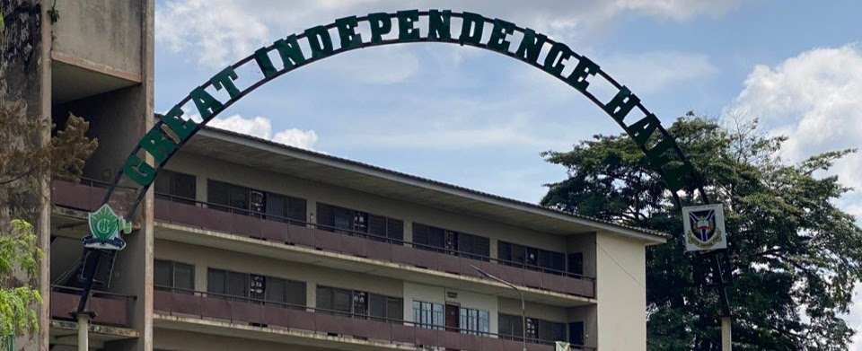

Queen Elizabeth II Hall: Named after the Queen of Great Britain and Northern Ireland, this hall was formally opened by her in 1956. .

Kuti Hall: Opened in 1954, Kuti Hall is named after the late Rev. Israel Oladotun Ransome-Kuti.

Sultan Bello Hall: Named after the grandfather of its namesake, the late Sir Alhaji Ahmadu Bello, Sultan Bello Hall was opened in 1962.
Tedder Hall: Also opened on November 17, 1952, this hall is located adjacent to Mellanby Hall. It was named after Lord Tedder, a Marshal of the Royal Air Force and former Chancellor of Cambridge University.
Learn More About Our Beautiful And Awesome Gardens Available.
Idia Hall: Built in 1975, this is the second female hall. It was named after a 15th-century Bini Queen.

Mellanby Hall: The oldest residential hall at the University of Ibadan, Mellanby was opened on November 17, 1952, and was named after the first principal of the University College, Ibadan.
Nnamdi Azikiwe Hall: This hall is named after Nigeria's first Governor-General and President. It was founded in 1963 and is known as the "Baluba Republic" due to the activism of its early residents.

Independence Hall: Established in 1961 to commemorate Nigeria's independence, this hall is known as the "Katanga Republic," reflecting its history of student activism.